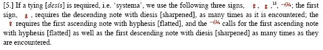
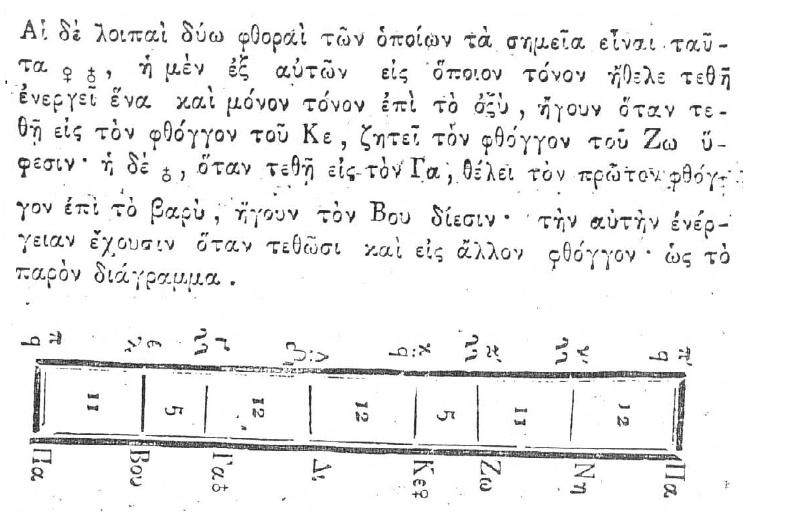
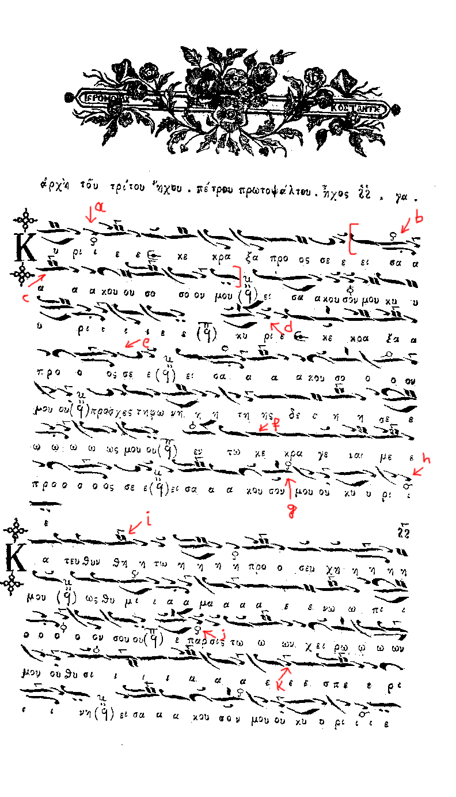
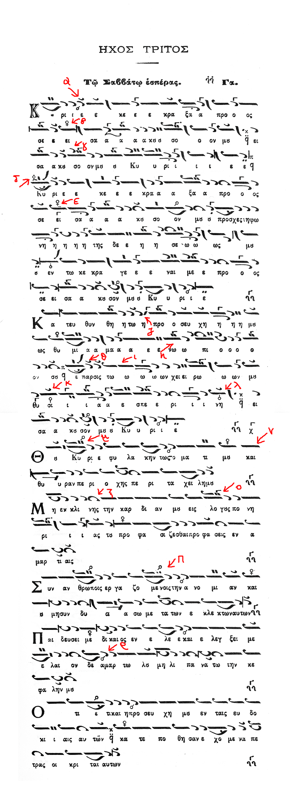
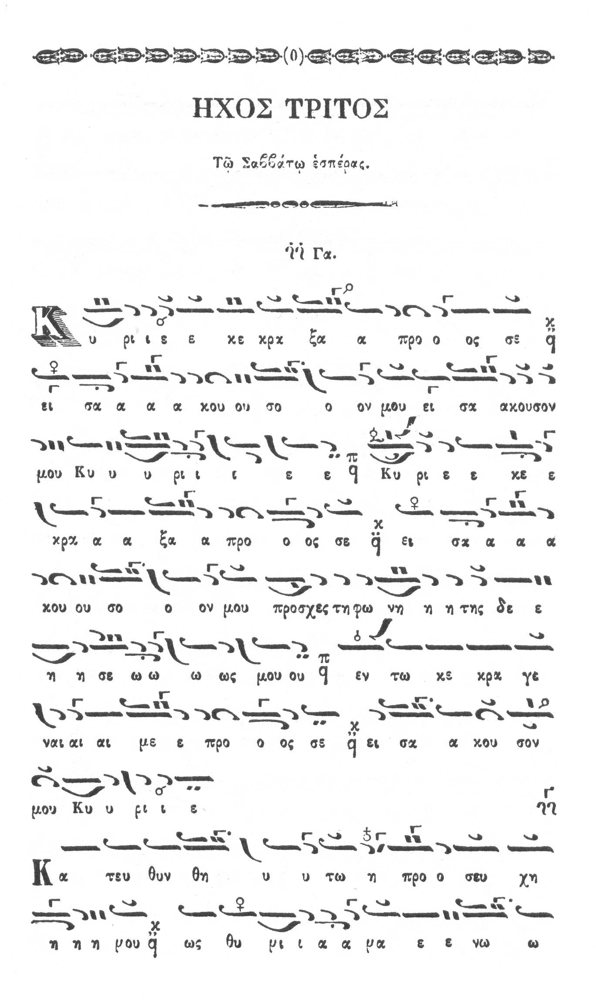
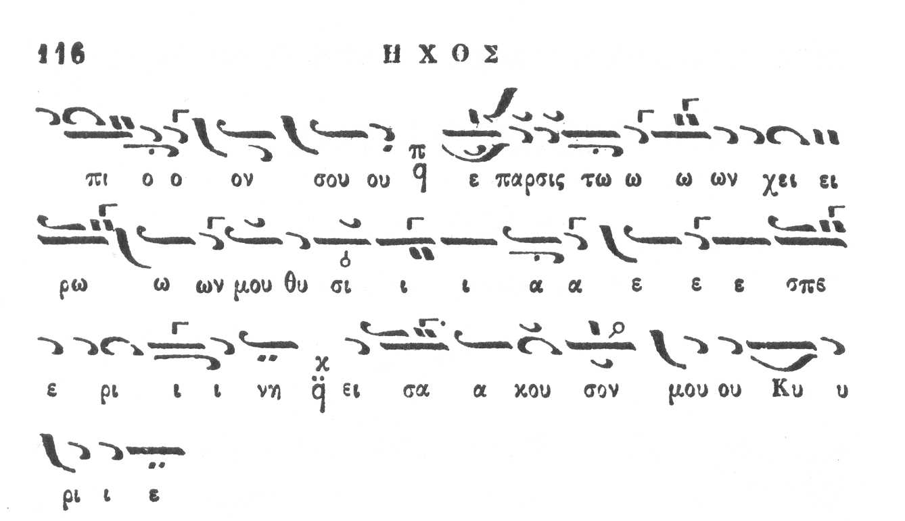

References
Xourmouzios on
the permanent yphesis/diesis (click to enlarge)

It is not clear whether Xourmouzios considers the
effect of the signs both on ascent and descent although that is the most reasonable
understanding of the text.
Th. Fokaeus
on
the permanent yphesis/diesis (click to enlarge)

(offered
by S. Gugushvili)
Fokaeus seems to copy his
teacher Xourmouzios' uncertain definition.
A. Boudouris on the permanent yphesis/diesis [pdf, 220 Kb]
According to Boudouris the permanent yphesodiesis is effective
both on ascent and on descent.
Fr. Ch. Oikonomou on the permanent yphesis/diesis
[pdf, 190 Kb]
According to Oikonomou, the
permanent yphesis is only effective on descent.
He doesn't speak about the permanent diesis.He also claims that the permanent signs,
the enharmonic sign, the normal yphesodiesis as well as the absence of a sign all
have the same effect in well known theseis (such as the one he presents as example).
He also supports the view of not writing the signs at all in such theseis and rely
on the experience of the psalti.
Sound examples
Ioannis' version by L. Angelopoulos,
Archon Protopsaltis of the Archdiocese of Constantinople
Broadcast-Kekragarion-G-LAngelopoulos-LIVE-StIrene.mp3
(low sound quality)
Ephesios and Ioannis' versions by G. K. Michalakis
GKM_KekragarionPetrou_IoannouMode03_Melos.mp3
with comments and examples of scales/intervals.
And this better quality version with ison
GKM_Kekragarion_Mode03_Melos_RVRB.mp3
And even more detailed examples by G. K. Michalakis
Kekragarion_Intro.mp3
Ephesios_Parallage.mp3
Ephesios_Melos_Slow.mp3
Ephesios_Melos_Normal.mp3
Ioannis_Parallage.mp3
Ioannis_Melos Slow.mp3
Ioannis Melos_Fast.mp3
Issues:
Here is the Kekragarion of Petros Efesios,
a student of the 3 Teachers of the New Method,
from his Anastasimatarion,
published in Bucharest in 1820.
We study this in relation to the same piece from the
Anastasimatarion of Ioannis Protopsaltis published
by the Zoe brotherhood in Greece (1981 edition).
a) Does the enharmonic fthora in (a) have exactly
the same effect
as a crossed (cross on top of circle) fthora? Theoretically
and practically (acoustically).
G. K. Michalakis
It's use here is to pull up BOU... PE (PetrosEfessios) has TWO BOus,
and, for economy of symbols, uses ADJEM to take care of both.
Now, Ioannis Protopsaltis (IP) uses third mode scale..
by definition it is ENHARMONIC (NOT diatonic) so GA DI is ALREADY LARGE..
(as it is in PE BEFORE he puts adjem...
so adjem here is to GUARANTEE a VERY UPRAISEd BOU....
to make sure we don't "miss it"..
So, a) PE = IP acoustically
Nobody ever explained 0+ clearly... I had spoken to Matthaios Andreou...
he didn't have much to say except what I've stated : ascent/descent differences.
Tsolakidis = " den einai to idion". What else can I say?
the rest is LINES I've heard and repeated that I eventually LINK to the neumatics...
I have never chanted Ephesios Kekragarion with Tsolakidis...
Yet, I've chanted Kypseli, and there are similarlines. So, I just make
the "connection".
I'm sure Tsolakidis learned all this by Iakovos who would tell him "den einai to
idio"...
Therefore, I cannot INSIST that what i do is the ONLY correct way of doing things...
But I have heard VERY few people sing Tritos like Tsolakidis...
So, what they have to say isn't SO important.
At least I say what my sources are...
Where does everybody come up with their ideas..
b) The phrase in brackets appears with the crossed
(circle on top of cross)
fthora instead of the enharmonic in the Anstasimatarion
of Ioannis Protopsaltis.
Does that make any difference in performance?
G. K. Michalakis
Yes....
In PE, I'd do it "pathetitikos", with NO grimace.... it becomes supplicatory "sad"...
In IP, I'd do a "GRIMACE" on the second Zo.... it doesn't mean that the Zo necessarily
goes up (the computer will tellus", but is is "SPECIAL"
( I do the same grimace I did for the katanyktiko troparion..)
I said same GRIMACE and NOT same INTERVAL...
The "grimace" gives a supplicatory yet "questionning" type of "hearing"...
something like " insisting parakelesma".
So, in the beginning of the recording of PE, I do ONE with GRIMCE
and the second as I suppose the PE score is indicating.
I'm trying to say that there are MANY melodic Formulae, NOT only in MELISMS
and DEVELOPMENTS, but in INTERVALS as well, as far as Third mode is concerned....
it is one of the "richest" interval modes... it alternates between diatonic
and enharmonic so exquisitely...
So, b) REGARDLESS of INTERVALS (even if ALL ZO frequencies WERE to be the same),
PE and IP are NOT acoustically the same..
c) Is ZW in (c) flat/natural diatonic/sharp? Would it be executed
differently is the enharmonic
fthora in (b) was a crossed hyphesis?
G. K. Michalakis
Yes, as mentionned above, REGARDLESS of any potential frequecy differences,
there is a GRIMACE effect on the SECOND Zo.
first Zo PE=IP
second Zo [PE ='pathetic parakalesma"]
and [IP GRIMACED "insisting parakalsma]....therefore PE NOT= IP
Why do we need the diatonic fthora on GA to end on PA in the next
phrase?
To show us that BOU is not sharp anymore?
G. K. Michalakis
Bou is not as sharp, but Di AND KE are slighly pulled down....
(DI in its DIATONIC position, and KE in a lower that diatonic (that it, in
"tempered") position,
with "CHEWING" to gurarantee all these intervals.... becomes again 'supplicatory"..
IP doesn't need to add anything, because the PSALTIS KNOWS that the line is interpreted
as such..
d) Is (d) a ZW flat or not? The same thesis is explicitly given
with the enharmonic fthora in (j).
G. K. Michalakis
It is NOT natural (it's not as if I had put a fist mode fthora of Pa on Ke...
YET, IT MAY ALSO be chanted as such...
It may ALSO be "sadenned" = by doing an enharmonios adzem.
It all depends on the WORD and what the psaltis wishes to express.
Here, I'd do it betwen Adjem and natural..
e) c) Is ZW in (e) flat/natural diatonic/sharp?
Should there have been a diatonic fthora on KE in that phrase (as happens before
(f))?
G. K. Michalakis
Anaysis of e) uses a little Ni as well (but with a GOOD, HIGH interval)... the Zo
shouldn't be too flat..
If I choose the "pathetic" version, the c) is Adjem.
Otherwise, it is "grimaced and raised a little bit (a least "psychologically")
(f) ZW is clearly sharp here.
G. K. Michalakis
TRUE
(g) Is there a difference of this ZW flat with ZW flat of Barys
(Enharmonic) mode?
G. K. Michalakis
IN THIS case, in this ending cadence, NONE..... =
YET? conclusion cadences, even in barys, are "BRIGHTER"...
Zo hyphesis and Ke are done with a "smile" and do not sound "pathetic"......
now, does the INTERVAL change as compared to some initial cadence, only the computer
will tell...
(h) Could the diesis (sharp) on Bou be replaced with an enharmonic
fthora on GA (as in (a))?
G. K. Michalakis
Probably...
Yet, an adjem Ga bou "slurs" a bit the bou... (really keeps it "stuck" to the Ga).
(i) Zw is flat there. Why? Because we are in a diatonic mode and
Zw is always flat on descend? If that is the case,
how does this flat compare with the other two flats i.e. the crossed yphesis and
the enharmonic yphesis?
G. K. Michalakis
In the recording, I do it flat and less flat as well...
There is no need to make is sound "pathetic", and we don't spend too much time on
the Zo...
The GA-Di and DI-KE should be HIGH.... (so it is NOT just diatonic....)
Adjem would make it sound like barys, and "pathetic"...
(j) Is that ZW flat the same as in Barys (Enharmonic) mode?
G. K. Michalakis
THREE factors: the INTERVAL, the GRIMACE and the DURATION of the ZO...
TWO factors DIFFERENTIATE this Zo from Barys..
If you wish to make "eparsis" sound supplicative, then do a Barys adjem..
(adjem "pathetic" requires a VERY CLOSE KE-Zo interval,
a LONG duration AND a CHEWY, ROUNDING of mouth
(NOT= to "smile grimace" second Zo on 0+)
There is no need for all this in this line...
therefore the Zo hyphesis here is DIFFERENT..
(k) ZW is undoubtedly very sharp there.
G. K. Michalakis
There is no doubt...
The REAL question is "what should the Zo of esperIni be"?
With 0+ it would be flat...
Without 0+, since we're "diatonic", it's still low..
There are those who'd use a PA fthora on KE and thus do this Zo as NATURAL..

Now the same piece from the Anastasimatarion of Ioannis published
by the Zoe brotherhood in Greece (1981 edition).
Issues:
(α) Diesis instead of enharmonic fthora of Efesios.
(β) Crossed yphesis instead of ehnarmonic
fthora.
Why do we need the crossed yphesis there if not
to do the ZW flat in both ascend and descend?
G. K. Michalakis
NOT diatonic scale... "special grimace"...
(γ) No diatonic fthora on GA as we go
down to a cadence on PA.
G. K. Michalakis
It is KNOWN to ALL psaltis doing third mode....
(δ) Unlike Ephesios, we have a diatonic
fthora on NH in this thesis.
What difference does it make?
G. K. Michalakis
None...
(ε) Again, crossed yphesis instead of
Ephesios' enharmonic.
G. K. Michalakis
"Special grimace and special PUSH" for the second Zo, ascending...
(ζ) Is BOU sharp and PA sharp here?
G. K. Michalakis
GOOD remark... boils down to almost a KLITON... we're in HARMONIC here,
NOT diatonic cadence on PA..... EXACTLY.. but BOU isn't very much upraised...
(η) Is ZW flat here? According to the crossed
yphesis it should be,
otherwise what the meaning of the fthora?
G. K. Michalakis
YES... upraised.. there are those who raise it more ( to natural level)
and those who do so les (but it in NOT kept on Adjem level)..
It stays that way until enopiOn sou, where it comes down again...
(θ) Same thesis as (δ) however no fthora
on NH.
Does that make any difference?
G. K. Michalakis
NO...
(ι) What about this ZW here? Flat?
G. K. Michalakis
The second one more than the first (so, NO...)
(κ) Diatonic fthora of PA instead of Ephesios'
KE.
Probably more correct to show movement according
to the
Pentachordon system.
G. K. Michalakis
NO... to FIX ZO AND....
to make a very LARGE PA BOU (= Di KE) interval.
(λ) Back to the lower pentachord.
G. K. Michalakis
What do pentachords have to do with Tritos?
We're either fixing Zo or not...
We're going back to enharmonic, in which it remains, because we're on conclusion
on Ga
(so Ga DI is "pushed" = BIG, , Di KE is BIG)... diatonic means Di will be a bit
pulled down..
(μ) This ZW flat is different (higher) than
Barys' ZW flat.
Equal flat as if a crossed yphesis had been used.
Would be interpreted the same even if enharmonic
fthora was placed there.
G. K. Michalakis
In this case, yes..
(ν) What would the meaning of the crossed
yphesis be there if not to make ZW flat?
G. K. Michalakis
To remind us that we are in ENHARMONIC,
and that NI is VERY HIGH (NOT a diatonic Ni...)
and first Zo Higher that second Zo...
0+ is an enharmonios fthora, NOT a diatonic fthroa...
Why wasn't crossed hyphesis placed at the beginning
of the verse?
G. K. Michalakis
Because KYrie is LOWER ZO....
(ξ) Is BOU sharp and PA sharp in this thesis?
G. K. Michalakis
YES.... it is not a conclusive cadenc, it is a TRANSITION note (just as before)...
(ο) Forgotten ZW flat sign?
G. K. Michalakis
NO... we don't want it too flat...
(π) A typo or a temporary modulation because
of the meaning of the words?
G. K. Michalakis
It is not as flat as EBX would do it... it's almost a triphonos bou... with
"chewing"...
(ρ) A typo or a temporary modulation because
of the meaning of the words?
G. K. Michalakis
In diiiiiiikaios, it is NOT adjem, and we can do an analysis.
Th "rho" is the equivalent of ZYGOS working on DESCENT and NOT on ascent...
it is "colour" to a syllable of a word... a CHROMATIC colour...
by a CHROA (I've explained that CHROAI may work on {DESCENT only}
OR {on descent as WELL as on return = ascent}...
but within a TETRACHORD ONLY.....here, it is a descent only situation....

And this version of Petros' Kekragarion here from Mousike Bibliotheke Collection
(1868)
(scanned by S. Gugushvili)


{kind=link}
{kind=link}